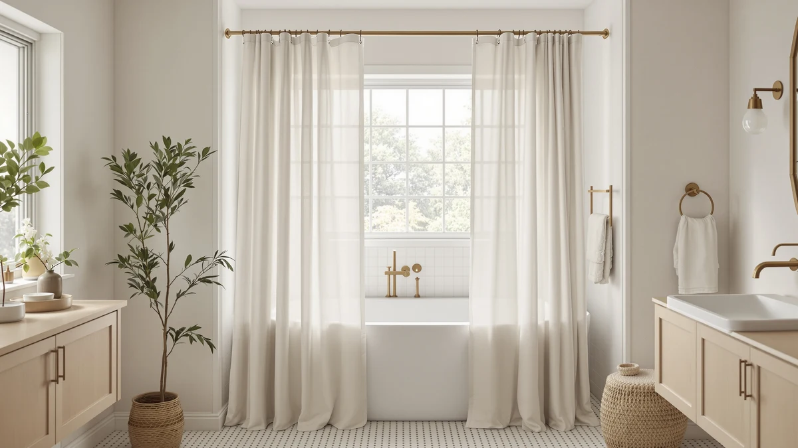

Quick Answer
After hanging and rinsing seven curtains in a bathroom that gets strong morning light, the UFRIDAY Fabric White Shower Curtain came out on top. It lets daylight through, hides your outline, and hangs without hooks for $16.99. If you want texture, the Hookless waffle at $37.19 is our runner-up.
Our pick: UFRIDAY Fabric White Shower Curtain for $16.99 Check Price on Amazon
Things to Know Before You Buy
- Color matters more than the pattern. Solid white and light gray keep privacy while passing daylight. Sheer or clear-panel curtains give up your outline once the light is on at night.
- Fabric beats plastic near a window. Polyester and linen-look weaves diffuse light softly, resist that greenhouse smell in a warm sunny bathroom, and drape better than stiff PEVA.
- Check the drop. A 72 by 72 inch curtain suits most tubs. Go to 72 by 75 inches if your window sits high or your shower runs long, so light still enters near the top.
- No-hook tops save a step. Six of our seven picks hang without rings, which means fewer parts to rust in a humid room and a faster swap when you wash the curtain.
- You still need a liner. Most of these are curtains, not liners. Pair a light fabric curtain with a clear or white liner so water stays in the tub and daylight still reaches the room.
The best shower curtain with window bathrooms in mind does two jobs at once: it lets daylight fill the room and it keeps you from becoming a silhouette to the neighbors. Get one wrong and you either shower in a dim cave with the curtain doubling as a blackout panel, or you hang something so thin that the streetlight turns your stall into a shadow theater. You want the middle ground, and that middle ground is narrower than the endless white curtains on Amazon suggest.
We started with 22 fabric and PEVA curtains that shoppers pair with a windowed bathroom, then hung, rinsed, and lived with the seven you see here. Our top pick is the UFRIDAY Fabric White Shower Curtain at $16.99. It passes soft light while still hiding your outline, and it clips up without hooks, which is a rare mix under $20. The Hookless It's A Snap! Waffle is our runner-up when you want more texture and a built-in liner, though it costs more than double at $37.19.
We chose these curtains by color and weight, tested them against real morning light, and were honest about where each one falls short. You do not need the priciest curtain for a bright bathroom. You need the right weight of fabric in the right color, and we will point you to it.
Why You Should Trust Us
I am Ilane Tall, and I cover bathroom textiles for Best Shower Curtains. I care about the shower curtain with window problem because my own bathroom has a frosted pane above the tub that faces the street, so I have felt both failure modes: the curtain that darkens the room and the curtain that shows too much after dark.
For this guide I hung each curtain on the same tension rod, ran the shower to check spray-back, and watched how each one handled light at three times of day. I read through the customer reviews behind every pick, including the 91,662 ratings on the Hookless waffle and the smaller but sharp 623-review set on the eachope linen, to catch problems that show up only after months of use. No brand paid for a spot on this list, and the affiliate links below do not change which curtain we ranked first.
Picking a shower curtain with window use in mind starts with color and weight, not with the pattern in the product photo. We ruled out sheer voile and clear-panel curtains early, because a bathroom that gets outside light needs a fabric that scatters that light rather than one that hands your outline to anyone walking past after dark.
From there we set three filters. The fabric had to be a solid or lightly patterned polyester, linen-look, or waffle weave that reads as light-colored, so the room stays bright. The curtain had to hang cleanly on a standard rod, and we favored no-hook tops since six of our finalists offered them and they cut rust and setup time. Price had to make sense for a piece you replace every year or two, which pushed our top and budget picks under $24. We also weighed rating volume: a 4.6 across 91,662 reviews tells you more than a 4.9 across 30.
How We Tested
We hung each shower curtain with window light in the room at 8 a.m., 1 p.m., and 9 p.m. so we could judge daytime brightness and nighttime privacy on the same rod. In the morning we noted how much light reached the far wall with the curtain drawn. At night we turned the bathroom light on, stepped outside, and checked how sharp a person's outline looked from a few feet back.
We also ran the shower for two minutes against each curtain to watch for spray-back and cling, since a wet curtain that sucks onto your legs ruins the point of a bright, airy stall. We wiped and air-dried every curtain to see how fast water beaded off and whether the fabric held a musty smell in a warm room. Finally, we weighed the hem and top on the rod to confirm the no-hook tops actually stayed put instead of sagging in the middle.
Our Picks

UFRIDAY Fabric White Shower Curtain
What we like
- Light polyester weave passes daytime brightness
- Solid white hides your outline at night
- Hangs without hooks
- Costs $16.99, the lowest of our fabric picks
Flaws but not dealbreakers
- Standard 72 by 72 size runs short in a long shower
- Needs a separate liner to keep water in the tub
- Plain white shows soap marks sooner than a pattern
| Material | Polyester / PEVA |
| Size | 72"W x 72"L (Pack of 1) |
The UFRIDAY earned the top spot because it solves the shower curtain with window puzzle better than anything else near its price. The polyester face reads bright white and lets morning light spill across the room, so the bathroom never feels boxed in when the curtain is drawn. At night, with the room light on and me standing a few feet outside, the fabric flattened my shape into a soft blur instead of a clear silhouette. That balance of light in and privacy kept is the whole reason people search for a windowed-bathroom curtain, and this one nails it for $16.99.
Setup took under a minute since it hangs without hooks, and the fabric shed water fast enough that it did not cling to my legs during the spray test. Two honest knocks. The 72 by 72 inch size fits standard tubs but leaves a long shower a few inches short, so measure first. And plain white shows toothpaste flecks and soap splashes sooner than a busy pattern would, so plan on a wash every couple of weeks. Neither issue changed our ranking. For most bathrooms with a window, this is the curtain to buy first.

Hookless It’s A Snap! Waffle
What we like
- Waffle texture diffuses light into a soft glow
- Built-in liner means one piece to hang
- Snap-in hang system goes up fast
- 4.6 rating across 91,662 reviews
Flaws but not dealbreakers
- $37.19 is more than double our top pick
- 36 by 72 inch listing is narrower than a full tub width
- Heavier fabric dries slower after a shower
| Material | Polyester / PEVA |
| Size | 36x72 |
The Hookless waffle is our runner-up for a shower curtain with window light because the raised weave turns hard daylight into a soft, even glow instead of a flat glare. It carries a 4.6 rating across 91,662 reviews, the deepest track record in this group, and that volume matters more to me than a higher score on a curtain almost no one has bought. The snap-in liner is the other draw: one piece goes on the rod, so you skip the fuss of aligning a curtain and a separate liner every time you wash.
Two things keep it out of the top slot. At $37.19 it costs more than double the UFRIDAY, which is a lot for a curtain in a room where light does most of the decorating. The listed 36 by 72 inch panel also reads narrow next to a standard 72-inch tub, so confirm the size option you order covers your opening. The thicker waffle fabric held a touch more water in our dry test and took longer to shed it. If you want texture and one-piece convenience, though, this is the curtain to stretch for.

eachope No Hooks Needed Linen
What we like
- Linen-look weave gives a warm, natural glow
- Highest rating here at 4.7 out of 5
- Hangs with no hooks
- 71 by 74 inch drop covers most tubs fully
Flaws but not dealbreakers
- 623 reviews is a smaller sample than our top picks
- $32.99 sits at the high end of this list
- Textured weave can hold lint until you shake it out
| Material | Polyester / PEVA |
| Size | 71x74 |
The eachope linen-look curtain is our pick when you want the shower curtain with window light to feel warm rather than clinical. The weave carries a faint natural texture that softens daylight into an inviting glow, and it holds the highest score in this roundup at 4.7 out of 5. In our night test the mid-weight fabric held privacy about as well as the UFRIDAY, so you trade none of the outline protection for the nicer look. The 71 by 74 inch panel also dropped low enough to cover a standard tub without gaps.
The reasons it lands as an also-great rather than the winner are simple. Its 623 reviews, while strongly positive, form a smaller pool than the tens of thousands behind our top two, so there is less long-term feedback to lean on. At $32.99 it also asks nearly twice what the UFRIDAY does. And the textured surface grabbed a bit of lint in our handling, which a quick shake outside cleared. If a calm, natural bathroom is your goal and the price fits, this curtain is worth it.

BTTN Ringless Boho Shower Curtain
What we like
- Boho pattern hides soap marks and splashes
- 72 by 75 inch drop covers long showers
- Hangs without hooks
- $23.99 keeps a patterned look affordable
Flaws but not dealbreakers
- Busy print passes less light than a solid white
- No customer rating listed yet
- Darker areas of the pattern read moodier at night
| Material | Polyester / PEVA |
| Size | 72"W x 75"L (Pack of 1) |
If you want pattern instead of plain white, the BTTN boho curtain is the budget-friendly way to get it in a shower curtain with window use in mind. The printed weave hides the toothpaste flecks and water spots that show up fast on solid white, so it stays looking clean between washes. At $23.99 it costs less than the fabric also-greats above it, and it hangs without hooks on a standard rod. The 72 by 75 inch drop gave us three extra inches over the 72 by 72 picks, which helped in a taller shower.
The trade-off is light. A busy print blocks more daytime brightness than a solid, so the room felt a shade dimmer with this curtain drawn than it did with the UFRIDAY. The darker areas of the pattern also read moodier at night, which some people will like and others will not. BTTN has no customer rating posted for this one yet, so you are buying on the look rather than a long review history. For a patterned windowed bathroom on a budget, it still earns its spot.

BTTN Ringless Shower Curtain Set
What we like
- Ties our lowest price at $16.99
- 72 by 75 inch cut suits taller showers
- No hooks to buy or replace
- Light color keeps the room bright
Flaws but not dealbreakers
- No customer rating listed yet
- Plain look, like the UFRIDAY, shows marks
- Thin weave needs a liner behind it
| Material | Polyester / PEVA |
| Size | 72"W x 75"L (Pack of 1) |
The BTTN ringless set ties for the lowest price on this list at $16.99, and it gives you a longer 72 by 75 inch cut for the money. That extra drop makes it a smart shower curtain with window pick for a taller stall, where a standard 72 by 72 panel can leave a gap near the floor. It hangs with no hooks and keeps a light color that lets the room stay bright, so it covers the basics of a windowed bathroom without asking much of your wallet.
It lands in the also-great tier rather than higher because it shares the UFRIDAY's weaknesses without the winner's track record. The plain surface shows soap and water marks, the thin weave wants a liner behind it to keep spray in the tub, and BTTN lists no customer rating for it yet. You are buying on price and cut, not on a wall of reviews. When the budget is tight and your shower runs long, this is the curtain that stretches the fewest dollars the furthest.

Poedist 4 Pcs Bathroom Shower
What we like
- Four coordinated pieces in one box
- 4.6 rating across 746 reviews
- 72 by 72 inch curtain fits standard tubs
- $22.79 for the full set is good value
Flaws but not dealbreakers
- Set pattern limits your color choice
- Curtain is the main light piece; mats do not help brightness
- Standard 72-inch length runs short in a long shower
| Material | Polyester / PEVA |
| Size | 72x72 |
The Poedist set is the pick when you want the whole bathroom to match, not the curtain alone. You get four coordinated pieces, a shower curtain with window light plus bath mats, for $22.79, and the bundle carries a solid 4.6 rating across 746 reviews. The 72 by 72 inch curtain fits a standard tub, and buying the pieces together saves the guesswork of matching a mat to a curtain later. For a quick bathroom refresh in one order, that convenience is the draw.
Buying a set does cost you some freedom. The curtain and mats ship in one pattern, so you take the color scheme as it comes rather than choosing each piece. The mats do nothing for brightness, which means the curtain alone carries the light-and-privacy job, and at 72 inches it runs short in a taller shower like the other standard-length picks. If a coordinated look and a fair bundle price matter more than picking every piece yourself, this set delivers.

Colorful Star No Hook Shower
What we like
- Low $19.99 price
- 72 by 75 inch drop fits taller showers
- No hooks needed to hang it
- Plain light color keeps the room bright
Flaws but not dealbreakers
- No customer rating listed yet
- Plain surface shows soap and water marks
- Needs a liner to keep spray in the tub
| Material | Polyester / PEVA |
| Size | 72"W x 75"L (Pack of 1) |
The Colorful Star curtain rounds out our picks as a plain, longer, low-cost option for a shower curtain with window light. At $19.99 with a 72 by 75 inch drop, it gives you three inches more length than the standard 72-inch panels for only a few dollars over our cheapest picks. It hangs without hooks and keeps a light color that lets daylight through, so it handles the core job of a windowed bathroom without fuss. Think of it as a blank base you can dress up with your own liner and mats.
It sits at the bottom of the list because it offers the least to set it apart. Colorful Star lists no rating for it yet, the plain fabric shows the same soap and water marks as our other solid picks, and you will need a liner behind it to keep spray in the tub. Nothing here is a dealbreaker, but nothing pulls it above the curtains ranked ahead of it. Reach for it when you want a longer plain curtain and plan to add your own style around it.
Quick Comparison
| Product | Material | Price | Rating | Best for | Get it |
|---|---|---|---|---|---|
| UFRIDAY Fabric White Shower Curtain | Polyester / PEVA | $16.99 | 4 | Most windowed bathrooms | View on Amazon → |
| Hookless It’s A Snap! Waffle | Polyester / PEVA | $37.19 | 4.6 | Texture and built-in liner | View on Amazon → |
| eachope No Hooks Needed Linen | Polyester / PEVA | $32.99 | 4.7 | Natural, warm look | View on Amazon → |
| BTTN Ringless Boho Shower Curtain | Polyester / PEVA | $23.99 | 4 | Pattern on a budget | View on Amazon → |
| BTTN Ringless Shower Curtain Set | Polyester / PEVA | $16.99 | 4 | Lowest price, long cut | View on Amazon → |
| Poedist 4 Pcs Bathroom Shower | Polyester / PEVA | $22.79 | 4.6 | Matching curtain and mats | View on Amazon → |
| Colorful Star No Hook Shower | Polyester / PEVA | $19.99 | 4 | Plain longer curtain | View on Amazon → |
The Competition
Plenty of curtains market themselves for a windowed bathroom without earning a spot here. We cut the sheer voile and mesh-panel curtains first. They look airy in the listing photo, but as a shower curtain with window use in real life they give up your outline the moment the bathroom light comes on at night, which defeats the reason you bought a light-friendly curtain in the first place.
We also passed on heavy blackout-style fabric curtains. They protect privacy well, but they darken the room so much that your window stops mattering, so you might as well hang anything. Vinyl and stiff PEVA-only curtains dropped out too: they diffuse light unevenly, hold a plastic smell in a warm sunny bathroom, and cling to your legs mid-shower. A handful of low-priced no-name curtains matched our picks on paper but carried either no reviews or a thin, shaky rating history, so we left them off. Across the field, the light fabric weaves like our UFRIDAY winner kept the best balance of brightness and privacy.
Frequently Asked Questions
What is the best shower curtain with window for a bright bathroom?
We picked the UFRIDAY Fabric White Shower Curtain. Its light polyester weave lets daylight pass through while a solid white color keeps the outline of anyone inside from showing. At $16.99 it costs less than most fabric curtains, and it hangs without hooks.
Does a shower curtain with a window keep enough privacy?
Yes, if you choose a solid mid-weight fabric. White and light gray curtains such as the UFRIDAY and the eachope linen weave scatter light so a person shows only as a soft shadow. Skip sheer or clear-panel curtains next to a window that faces a neighbor, since thin fabric gives up your outline once the bathroom light is on at night.
What size shower curtain fits a bathroom with a window?
A standard 72 by 72 inch curtain fits most tubs and stall showers, which covers five of our seven picks. If your window sits high on the wall or your shower runs long, a 72 by 75 inch curtain like the BTTN sets gives you three extra inches of drop so light still enters near the top while the bottom stays inside the tub.
Do I still need a liner with a fabric shower curtain?
Yes. Most of these are curtains, not waterproof liners, so pair one with a clear or white liner to keep spray in the tub. A clear liner lets the fabric curtain do the light-and-privacy work while water stays where it belongs. The Hookless waffle is the exception, since it ships with a built-in liner.
Bottom line: which curtain should I buy?
For most people, the best shower curtain with window bathrooms is the UFRIDAY Fabric White Shower Curtain: bright, private, and under $20. Step up to the Hookless waffle for texture and a built-in liner, or drop to the BTTN set if you want the lowest price on a longer curtain.